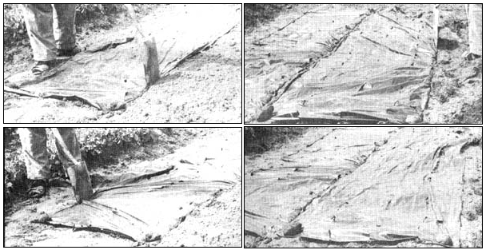
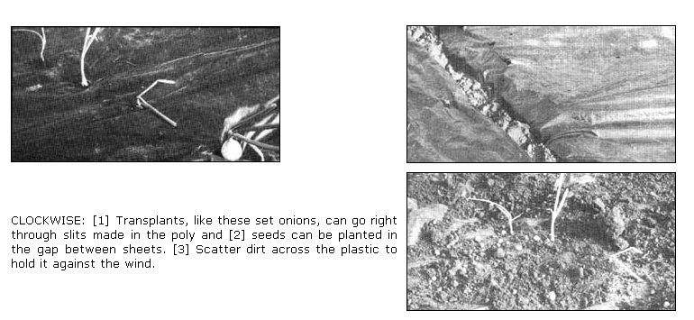
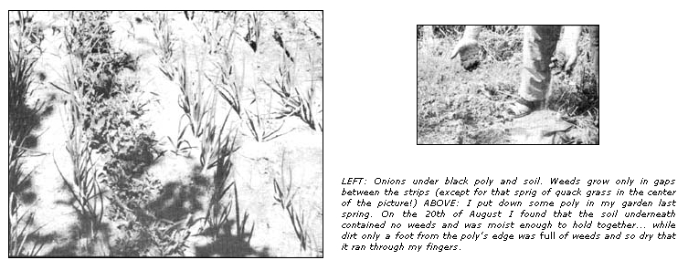

Plastic Mulch
September/October 1971
Well, folks, we're still not convinced it's a good idea but there's definitely a
growing trend (among some otherwise conservative organic gardeners, too) to
F.P. HUGHES reports on his experiments in Ontario, Canada.
Great bunches of onions, carrots and beets hang from the joists in our basement this fall, the freezer is full to the top with peas, beans and corn and Evelyn is beginning to tire of canning tomatoes and making relish. In the garden, several rows of cabbages are waiting to be cut just before first frost and a bountiful harvest of cauliflower will be ready just after. We shan't be buying vegetables in the supermarket for some time.
Although we've gardened for years, this is the first time we reaped such a superabundance of produce. Needless to say, there is a gimmick . . . but a gimmick anyone can use. We've simply learned about black polyethylene mulch.
Mulching, one of nature's oldest processes, has long been used by natural gardeners to control weeds and conserve moisture around fruit, vegetable and flower plants. Traditionally, only hay, grass clippings, leaves and other easily biodegradeable matter has been used for this job. Recently, though, a number of gardeners have begun spreading sheets of black poly (a seemingly unlikely mulch) across their gardens with rather startling results.
We discovered plastic mulch two years ago in the Canadian Department of Agriculture's book, Growing Vegetable Transplants. The publication said, "Black polyethylene film, usually 1-1/2 mils thick, is spread over the ground and the edges are covered with soil. Slits or holes are made in the film to allow planting through the film. The black film over the soil tends to warm the soil, reduce evaporation and prevent weed growth. Each of these effects is beneficial to crop plants."
That sounded good to us so we checked around and found that black poly is available almost anywhere transparent polyethylene is sold (hardware stores, farmers' supply houses, lumber yards, etc etc.) The black, 1-1/2-mil sheets come in rolls 100 feet long and 36 inches wide and currently costs about $2.50 a roll.
May I draw a veil over our first year's mistakes?
This year, with a little experience behind us, we started our garden just after the snow left the ground. First we cultivated the soil lightly, then put 10-foot-long strips of polyethylene down side by side with about a tenth of an inch between the edges. We planted early peas in this narrow "slot" and finished off that section of the garden by spreading about an inch of loose soil over the plastic to hold it down out of the wind.
One sunny but cold day shortly thereafter, we pushed a thermometer into the soil under the poly. It registered nearly fifty degrees. In unprotected soil nearby, the temperature was just over freezing. No wonder the peas germinated early!
Later we rolled out more of the poly and set onions through it. Since the onions were bigger and we wanted them farther apart than we had planted the peas, we simply made two-inch-long slits through the plastic for each onion and pushed the sets through the slits.
Don't try sowing small seeds - even seeds as big as peas - through slits this way. If the poly sheet moves ever so slightly as it will when you walk on it (yes, we walk on ours . . . but only in soft, light shoes), the small seeds will not find their way up to the sunshine and the air. Instead, they suffer the fate of weeds and smother under the plastic. We lost a lot of our 1969 crop this way.
For parsnips, carrots and other small-seeded plants, we slit the black poly lengthwise into strips ten inches wide and ten feet long. We placed these strips side by side with their edges an inch apart and, as we did with the peas, we then planted the tiny seeds in the narrow slot of earth that was left.
By the way, there's nothing particularly magic about the fact that we cut all our plastic sheets ten feet long. Our garden just happens to be that distance across. If your vegetable patch is twelve feet wide, cut your strips to reach. If the garden has exceptionally long rows, however, you may want to lay down a series of shorter pieces instead of one long strip of poly. Long strips are too liable to blow about in the wind . . . which always seems to get up just when the plastic is in the most awkward position. Your strips should simply be as long as you find convenient.
Convenience is worth looking for. When I was planting those onions I crouched down to cut the slit, then sat up straight, found an onion in the sack, planted that and - finally - moved on to the next position. Evelyn - attracted by my mutterings and groans - looked thoughtful for a moment, then brought out an empty five gallon drum from behind the barn.
"Here," she said, "try this. Turn the drum on its side so it'll roll and sit on it."
I did as she said and found the small barrel to be a comfortable moving seat, easy to roll back along the poly as I continued to plant onions every six inches . . . until the school bus brought our daughter home. When she saw all the fun I was having-rolling along backward, sowing onions through the slits -she took over the task. I was demoted to scattering earth on top of the plastic strips to keep them down.
After the peas had been harvested, we rolled up the black poly to take a look at the weeds that had tried to grow under it. All of them were white from lack of light (a botanist would say "etiolated") and most were lifeless. Without air and light, they could not survive. The weeds that had sprung up in the inch or two of soil covering the polyethylene had also quickly died . . . of thirst, as that shallow seedbed dried out.
A few weeds, of course, did grow between the edges of the polyethylene strips where the soil was left bare for the peas. Weeding here, however, was a small chore compared to the endless hacking with the hoe that would have been needed if we hadn't used the plastic mulch. One or two stray volunteers sprouted up through the slits made for the onions, too, but they were easily pulled by hand.
Be that as it may, there was one weed that surprised us no end. As the summer wore on we came to ignore the volunteer plants that sprang up across the polyethylene because we knew they were growing in only an inch of soil and would soon die. One especially large and healthy volunteer did attract Evelyn's attention, though, and she gave it a heave . . . only to find that the plant had sprouted through a hole in the plastic. We didn't think much about it until, later, we found another weed . . . and another . . . and another . . . always the same kind of grass and always growing through a hole in the poly.
At last it dawned on us that this grass - later identified as "quack" or "twitch" grass - can actually push its way up through the plastic. We've since found that it will also creep out from under the edges of the poly. The survival mechanisms built into this grass are unbelievable.
Actually, the quack grass - although definitely hardy - is not the overwhelming danger it might seem and we only had our major troubles with it when we were breaking new soil. In our old plot, where we've gardened for years, the twitch grass has long been weeded out, so to speak.
We've also found that quack grass cannot grow through loose plastic and, after some time underneath, it dies. So now, in previously unworked ground where the grass may be lurking, we leave the plastic loose and keep it in place by burying the edges of each shee a few inches deep. The strips billow up in a fresh breeze, but they stay put. Evelyn likes to lay a two-by-four on each loose piece of plastic when there's a high wind but I don't think it's necessary. After a season with the poly buried only around the edges to kill off the twitch grass, we go back to the neater method of securing the plastic with an inch of soil across its surface.
What happens to the rain that falls on the poly? With the exception of a little that stays on top where the plastic is dished by irregularities in the ground, it seems that most of the water runs off the edges of the strips and soaks into the soil. To be sure, the small amount of rainfall trapped on top of each sheet evaporates . . . on the other hand, the plastic prevents a much larger evaporation from the soil and smother all the weeds that would otherwise drink the moisture in the earth. On balance, I don't believe there's any loss of water from the ground. The poly, in fact, seems to help the earth hold water, if anything.
Our success with black poly mulch was noteworthy enough this season to make us want to experiment further next year. We're going to try to adapt the plastic to the flower beds for one thing, and it should be quite a challenge to get all the blooms in the correct position and the correct order.
We'd also like to try "sterilizing" an area by covering it with a 10-foot by 50-foot roll of poly. This should allow us to start a lawn free of dandelions, plantain and all the other weeds that compete for the space. This seems to us to be a better idea than poisoning the ground with weedkillers.
Yep. We're going to keep working with our newfound mulch. Plastic or no, it seems to give us good results. So good, in fact, that we just may run out of hanging, canning and freezing room if we aren't careful!
 COUNTERCLOCKWISE. [1]Lay out first strip of poly. A stone at each corner will hold it in place until you can push in one edge with a spade. [2] Then push opposite edge in. Don't worry about wrinkles. [3] Lay a second strip beside the first (the plastic in these pictures has been used several times). [4] Anchor second sheet with spade. |
 |
 |
|
 |
|
|